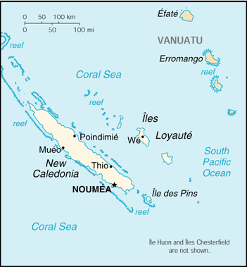

![[Country Flag of New Caledonia]](../flags/fr-lgflag.jpg)
| New Caledonia |
|
         |
 | |
| Introduction |
Background: Settled by both Britain and France during the first half of the 19th century, the island was made a French possession in 1853. It served as a penal colony for four decades after 1864. Agitation for independence during the 1980s and early 1990s seems to have dissipated.
| Geography |
Location: Oceania, islands in the South Pacific Ocean, east of Australia
Geographic coordinates: 21 30 S, 165 30 E
Map references: Oceania
Area:
total:
19,060 sq km
land:
18,575 sq km
water:
485 sq km
Area - comparative: slightly smaller than New Jersey
Land boundaries: 0 km
Coastline: 2,254 km
Maritime claims:
exclusive economic zone:
200 nm
territorial sea:
12 nm
Climate: tropical; modified by southeast trade winds; hot, humid
Terrain: coastal plains with interior mountains
Elevation extremes:
lowest point:
Pacific Ocean 0 m
highest point:
Mont Panie 1,628 m
Natural resources: nickel, chrome, iron, cobalt, manganese, silver, gold, lead, copper
Land use:
arable land:
0%
permanent crops:
0%
permanent pastures:
12%
forests and woodland:
39%
other:
49% (1993 est.)
Irrigated land: 160 sq km (1991)
Natural hazards: cyclones, most frequent from November to March
Environment - current issues: erosion caused by mining exploitation and forest fires
| People |
Population: 201,816 (July 2000 est.)
Age structure:
0-14 years:
31% (male 31,396; female 30,160)
15-64 years:
64% (male 65,042; female 63,961)
65 years and over:
5% (male 5,324; female 5,933) (2000 est.)
Population growth rate: 1.52% (2000 est.)
Birth rate: 20.84 births/1,000 population (2000 est.)
Death rate: 5.62 deaths/1,000 population (2000 est.)
Net migration rate: 0 migrant(s)/1,000 population (2000 est.)
Sex ratio:
at birth:
1.05 male(s)/female
under 15 years:
1.04 male(s)/female
15-64 years:
1.02 male(s)/female
65 years and over:
0.9 male(s)/female
total population:
1.02 male(s)/female (2000 est.)
Infant mortality rate: 8.57 deaths/1,000 live births (2000 est.)
Life expectancy at birth:
total population:
72.77 years
male:
69.84 years
female:
75.85 years (2000 est.)
Total fertility rate: 2.52 children born/woman (2000 est.)
Nationality:
noun:
New Caledonian(s)
adjective:
New Caledonian
Ethnic groups: Melanesian 42.5%, European 37.1%, Wallisian 8.4%, Polynesian 3.8%, Indonesian 3.6%, Vietnamese 1.6%, other 3%
Religions: Roman Catholic 60%, Protestant 30%, other 10%
Languages: French (official), 33 Melanesian-Polynesian dialects
Literacy:
definition:
age 15 and over can read and write
total population:
91%
male:
92%
female:
90% (1976 est.)
| Government |
Country name:
conventional long form:
Territory of New Caledonia and Dependencies
conventional short form:
New Caledonia
local long form:
Territoire des Nouvelle-Caledonie et Dependances
local short form:
Nouvelle-Caledonie
Data code: NC
Dependency status: overseas territory of France since 1956
Government type: NA
Capital: Noumea
Administrative divisions: none (overseas territory of France); there are no first-order administrative divisions as defined by the US Government, but there are 3 provinces named Iles Loyaute, Nord, and Sud
Independence: none (overseas territory of France); note - a referendum on independence was held in 1998 but did not pass
National holiday: National Day, Taking of the Bastille, 14 July (1789)
Constitution: 28 September 1958 (French Constitution)
Legal system: the 1988 Matignon Accords grant substantial autonomy to the islands; formerly under French law
Suffrage: 18 years of age; universal
Executive branch:
chief of state:
President of France Jacques CHIRAC (since 17 May 1995), represented by High Commissioner Thierry LATASTE (since 19 July 1999)
head of government:
President of the Government Jean LEQUES (since 28 May 1999)
cabinet:
Consultative Committee
elections:
French president elected by popular vote for a seven-year term; high commissioner appointed by the French president on the advice of the French Ministry of Interior; president of the government elected by the members of the Territorial Congress
Legislative branch:
unicameral Territorial Congress or Congres Territorial (54 seats; members are members of the three Provincial Assemblies or Assemblees Provinciales elected by popular vote to serve five-year terms)
elections:
last held 9 May 1999 (next to be held NA 2004)
election results:
percent of vote by party - NA; seats by party - RPCR 24, FLNKS 12, UNI 6, FCCI 4, FN 4, Alliance pour la Caledonie 3, LKS 1
note:
New Caledonia elects 1 seat to the French Senate; elections last held 27 September 1992 (next to be held NA September 2001); results - percent of vote by party - NA; seats by party - RPR 1; New Caledonia also elects 2 seats to the French National Assembly; elections last held 25 May-1 June 1997 (next to be held NA 2002); results - percent of vote by party - NA; seats by party - RPR 2
Judicial branch: Court of Appeal or Cour d'Appel; County Courts; Joint Commerce Tribunal Court; Children's Court
Political parties and leaders: Alliance pour la Caledonie [Didier LEROUX]; Developper Ensemble pour Construire l'Avenir or DEPCA [Robert FROUIN]; Federation des Comites de Coordination des Independantistes or FCCI [Raphael MAPOU]; Front Uni de Liberation Kanak or FULK [Ernest UNE]; Groupe de l'Alliance Multiraciale or GAM [Dany DALMAYRAE]; Independance et Progres [Alphonse PUJAPUJANE]; Kanak Socialist Front for National Liberation or FLNKS [Rock WAMYTAN] (includes PALIKA, UNI, UC, UPM); La Caledonie Autrement [Denis MILLIARD]; Loyalty Islands Development Front or FDIL [Cono HAMU]; National Front or FN [Guy GEORGE]; Parti de Liberation Kanak or PALIKA [Charles WASHETINE]; Rally for Caledonia in the Republic or RPCR [Jacques LAFLEUR]; Renouveau [Thierry VALET]; Socialist Kanak Liberation or LKS [Nidoish NAISSELINE]; Union Caledonienne or UC [Bernard LEPEU]; Union Nationale pour l'Independance or UNI [Paul NEAOUTYINE]; Union Progressiste Melanesienne or UPM [Andre GOPEA]
International organization participation: ESCAP (associate), FZ, ICFTU, SPC, WFTU, WMO
Diplomatic representation in the US: none (overseas territory of France)
Diplomatic representation from the US: none (overseas territory of France)
Flag description: the flag of France is used
| Economy |
Economy - overview: New Caledonia has more than 20% of the world's known nickel resources. In recent years, the economy has suffered because of depressed international demand for nickel, the principal source of export earnings. Only a negligible amount of the land is suitable for cultivation, and food accounts for about 20% of imports. In addition to nickel, the substantial financial support from France and tourism are keys to the health of the economy. The situation in 1998 was clouded by the spillover of financial problems in East Asia and by lower prices for nickel. Nickel prices jumped in 1999, and large additions were made to capacity.
GDP: purchasing power parity - $3 billion (1998 est.)
GDP - real growth rate: 3.5% (1998 est.)
GDP - per capita: purchasing power parity - $15,000 (1998 est.)
GDP - composition by sector:
agriculture:
4%
industry:
30%
services:
66% (1997 est.)
Population below poverty line: NA%
Household income or consumption by percentage share:
lowest 10%:
NA%
highest 10%:
NA%
Inflation rate (consumer prices): 1.5% (1998 est.)
Labor force: 79,395 (including 15, 018 unemployed, 1996)
Labor force - by occupation: agriculture 7%, industry 23%, services 70% (1999 est.)
Unemployment rate: 15% (1994)
Budget:
revenues:
$861.3 million
expenditures:
$735.3 million, including capital expenditures of $52 million (1996 est.)
Industries: nickel mining and smelting
Industrial production growth rate: NA%
Electricity - production: 1.52 billion kWh (1998)
Electricity - production by source:
fossil fuel:
65.79%
hydro:
34.21%
nuclear:
0%
other:
0% (1998)
Electricity - consumption: 1.414 billion kWh (1998)
Electricity - exports: 0 kWh (1998)
Electricity - imports: 0 kWh (1998)
Agriculture - products: vegetables; beef, deer, other livestock products
Exports: $381 million (f.o.b., 1998)
Exports - commodities: ferronickels, nickel ore, fish
Exports - partners: Japan 36%, France 30%, US 14%, Taiwan 9%, Australia 7% (1997)
Imports: $922 million (c.i.f., 1998)
Imports - commodities: foods, machinery and equipment, fuels, minerals
Imports - partners: France 41%, Australia 13%, New Zealand 7%, Japan 5% (1998)
Debt - external: $79 million (1998 est.)
Economic aid - recipient: $770 million from France (1998)
Currency: 1 Comptoirs Francais du Pacifique franc (CFPF) = 100 centimes
Exchange rates: Comptoirs Francais du Pacifique francs (CFPF) per US$1 - 117.67 (January 2000), 111.93 (1999), 107.25 (1998), 106.11 (1997), 93.00 (1996), 90.75 (1995); note - linked at the rate of 18.18 to the French franc
Fiscal year: calendar year
| Communications |
Telephones - main lines in use: 44,000 (1995)
Telephones - mobile cellular: 825 (1995)
Telephone system:
domestic:
NA
international:
satellite earth station - 1 Intelsat (Pacific Ocean)
Radio broadcast stations: AM 1, FM 5, shortwave 0 (1998)
Radios: 107,000 (1997)
Television broadcast stations: 6 (plus 25 low-power repeaters) (1997)
Televisions: 52,000 (1997)
Internet Service Providers (ISPs): 1 (1999)
| Transportation |
Railways: 0 km
Highways:
total:
5,562 km
paved:
975 km
unpaved:
4,587 km (1993)
Ports and harbors: Mueo, Noumea, Thio
Merchant marine:
total:
1 ship (1,000 GRT or over) totaling 1,261 GRT/1,600 DWT
ships by type:
cargo 1 (1999 est.)
Airports: 28 (1999 est.)
Airports - with paved runways:
total:
5
over 3,047 m:
1
914 to 1,523 m:
3
under 914 m:
1 (1999 est.)
Airports - with unpaved runways:
total:
23
914 to 1,523 m:
12
under 914 m:
11 (1999 est.)
Heliports: 6 (1999 est.)
| Military |
Military branches: French Armed Forces (Army, Navy, Air Force, Gendarmerie); Police Force
Military expenditures - dollar figure: $192.3 million (1996)
Military expenditures - percent of GDP: 5.3% (1996)
Military - note: defense is the responsibility of France
| Transnational Issues |
Disputes - international: Matthew and Hunter Islands claimed by France and Vanuatu